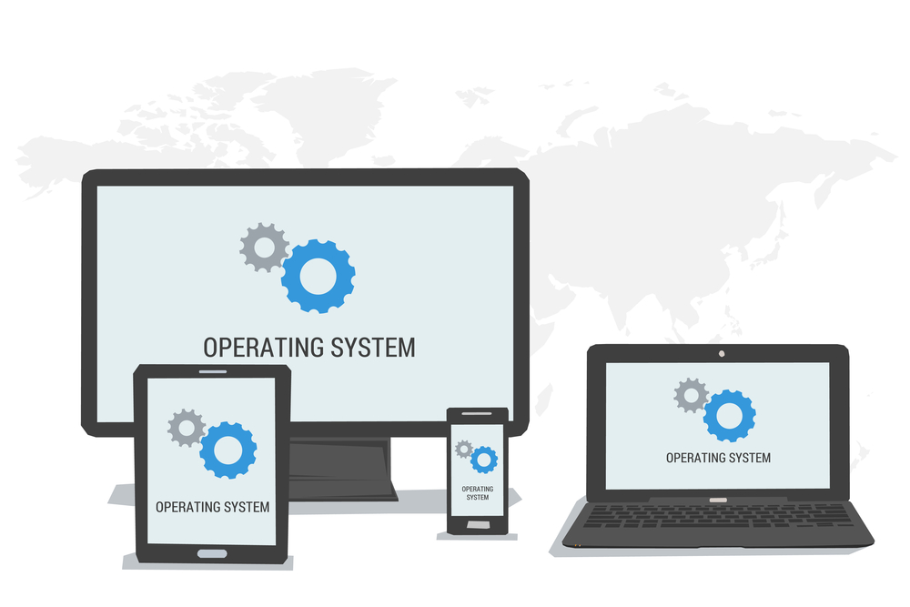

Installing an Operating System

Installing from a flashdrive
Step 1A: Use Windows 7/8/10 to create a bootable Windows 10 flashdrive.
(Assumptions: User is using Windows 7/8/10 and has an internet connection.)
1. Download rufus from here
(Rufus is a utility that allows you to create bootable flashdrives from .iso files)
2. Download and run the latest Windows 10 media creation tool from here
(Click on "Download Tool Now" under "Create Windows 10 installation media")
3. Accept the terms
4. At "What do you want to do" check the box saying "Create installation media (USB flash drive, DVD, or ISO File) for another PC" and click next
5. At "Select language, architecture, and edition" check the box saying "Use the recommended options for this PC" and click next
6. At "Choose which media to use" check the box for "ISO File" and click next
7. Choose a location to save the Windows.iso to and click save
8. The tool will now download the .iso file to your PC
9. Once you're done waiting, run rufus and choose the flashdrive you want to install the iso to
(If you're unsure of what flashdrive it is unplug it and note which option disappears to find out the one you want)
10. For a relatively new PC that supports UEFI we'll want to choose GPT for the partition scheme, otherwise if the PC is relatively old we'll want MBR.
(If you're unsure the MBR option also works for UEFI machines but the main reason you don't want to use it is because BIOS/MBR only supports up to 2TB in space for a single disk drive)
11. Click start and ok for the Recommended mode
12. Once the drive is done being written to you can now begin the installation process
Step 2A: Install Windows 10 to a PC
1. Shut down the PC you want to install Windows 10 to and make sure you know what to press in order to access the boot menu.
(Popular ways to get to the boot menu are by using F12, F9 or F2)
2. Once you get to the boot menu choose the flashdrive with the Windows 10 install medium by using the up and down arrows (or the mouse depending on the PC)
3. The drive will load and it will give you the option of what language etc. you want, click Next
4. If you have a product key enter it, otherwise if you have one attached to your microsoft account it will apply it when you login for the first time or if the PC was activated with Windows 10 from the factory it will most likely carry over even though you will wipe the drive.
5. When it asks you where you want to install Windows delete all the current Drive 0 Partitions.
(This is usual in a PC with one drive, but make sure its the right one)
6. Click New, Ok and then Next
7. Windows is installing
8. Once it reboots into the startup phase just follow through the instructions as they are fairly straight-forward.